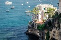
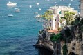

Multimédia
Nesta página encontra conteúdos multimédia
Fotografias
 

Vídeo
Poesia
Entre o mar Tirreno e o Vesúvio altivo,
ergue-se Nápoles, de espírito vivo.
Ruas antigas, memórias sem fim,
guardam segredos de um passado sem par, assim.
Ecoam vozes na arte e na canção,
misturam-se séculos em cada expressão.
Do centro histórico ao cais que cintila,
respira-se história, beleza que fascina.
Cidade do sol, do sabor e da vida,
berço da pizza, paixão dividida.
No olhar do povo, fervor e coragem,
Nápoles é alma, é pura mensagem.
E quando a noite se deita no mar,
o Vesúvio vigia, pronto a recordar:
que da força da terra, do fogo e do tempo,
nasce Nápoles eterna, de eterno alento.